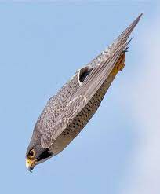
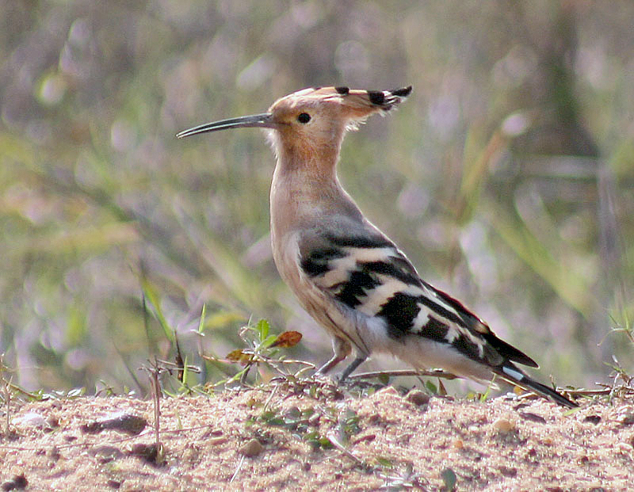

Сапсан[1] (лат. Falco peregrinus) - хижий птах із сімейства соколиних, поширений на всіх континентах, крім Антарктиди. Розміром із сіру ворону, виділяється темним, аспідно-сірим оперенням спини, строкатим світлим черевом і чорною верхньою частиною голови, а також чорними "вусами". Залежно від розміру та особливостей забарвлення, розрізняють близько 17 підвидів цього птаха.
Сапсан є як найшвидшим птахом, так і найшвидшим представником царства тварин взагалі. За оцінками фахівців, у стрімкому пікірувальному польоті він здатний розвивати швидкість понад 322 км/год, або 90 м/с. Однак у горизонтальному польоті поступається у швидкості стрижу. Під час полювання сапсан сидить на присаді або планує в небі; виявивши здобич, він підводиться над жертвою і стрімко пікірує вниз ("робить ставку"), по дотичній вдаряючи її складеними і притиснутими до тулуба лапами. Удар кігтями задніх пальців буває настільки сильним, що навіть у досить великої дичини може відлетіти голова.
Об'єктом полювання цього сокола є переважно середнього розміру птахи, як-от голуби, шпаки, качки та інші водні й навколоводні види, рідше невеликі ссавці. Статева зрілість настає у віці двох років, пари зберігаються протягом усього життя. Гніздиться на скелястих урвищах, вершинах увалів, рідше на купинах мохових боліт або кам'яних будовах - дахах і уступах висотних будівель, дзвіницях, мостах тощо.
За весь час спостережень сапсани вважалися рідкісним птахом. Після закінчення Другої світової війни їхня і без того невелика чисельність почала помітно скорочуватися, значною мірою внаслідок господарського використання ДДТ та інших пестицидів, що негативно діяли на ембріональний розвиток потомства. Тільки в 1970-х роках завдяки забороні на застосування цього отрутохімікату, а також впровадженню екологічних програм, популяція птахів у багатьох районах світу стала повільно відновлюватися. Сапсан занесений до Червоної книги Росії як нечисленний вид (II категорія), а також до Додатка I до Конвенції СІТЕС, що забороняє торгівлю цими птахами в усьому світі.

Одуд — невеликий птах, 25—29 см завдовжки і з розмахом крил 44—48 см. Виділяється смугастим чорно-білим оперенням крил і хвоста, довгим тонким дзьобом і довгим чубчиком на голові, тому його легко відрізнити від інших птахів.